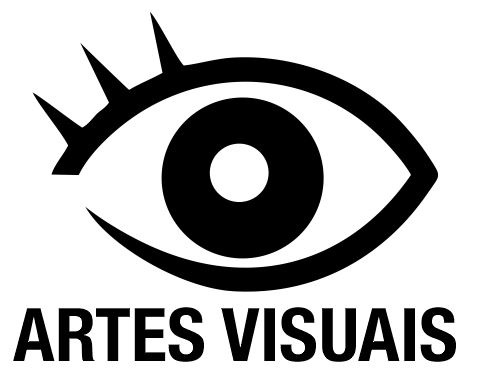
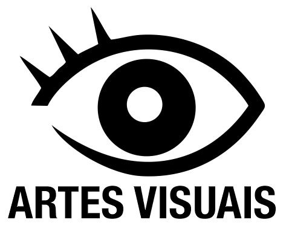

Bem vindo ao Vida Estudantil!
A arte acadêmica, ou academicismo, é um estilo artístico que surgiu na Europa entre os séculos XVII e XIX, baseado em um sistema de ensino formal e rigoroso nas academias de arte, com foco em técnicas clássicas, anatomia e representação idealizada da beleza, muitas vezes com temas históricos ou mitológicos. No Brasil, o Academicismo foi instituído em 1816 e influenciou a produção artística e a formação de artistas, como Pedro Américo, até a sua incorporação em universidades no século XX
 
